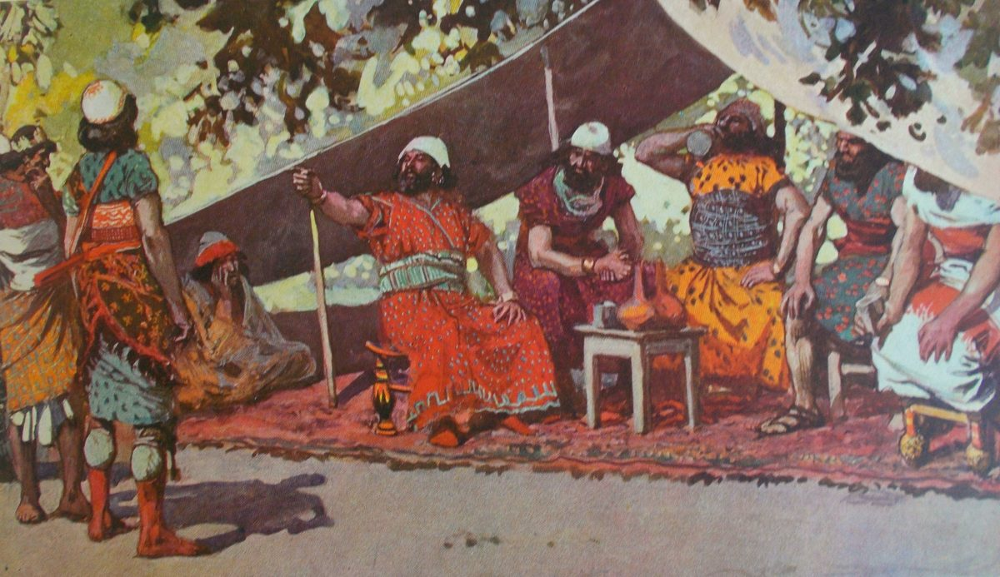

1 Kings 20 — The Mister Translation

1 Kings 20:12, 16. Tissot sketched it before his death in 1902, and Hoffbauer painted it for the 1904 Bible, whose caption is ‘The five kings drink under the tent’. The verse has thirty-two. The Hebrew says ‘booths’, and the plate has a cloth awning. The pointing man may be giving the order of verse 12, one word long.
_%E2%80%A2_invenit_James_Tissot_%E2%80%A2_pinxit_Charles_Hoffbauer_%E2%80%A2_excudit_Maurice_de_Brunoff_apud_Philip_de_Vere_%E2%80%A2_praesentat_Phillip_Medhurst.jpg){kind=link}
Translator's Notes — verse by verse
⚠ Where this chapter stands. The Hebrew puts the Aramean war here and Naboth’s vineyard after it. The Greek Bible in the Vaticanus tradition has them the other way round: its chapter 20 is Naboth, and this chapter is its 21, so that there the two wars with Aram run on without a break into the end of the book. This page follows the Hebrew order, and the Hebrew order has a join of its own, at the last words of this chapter (see verse 43).
“Ben-hadad king of Aram”. Kings gives this man no father’s name. The Ben-hadad of 1 Kings 15:18 (now on these pages) was the son of Tabrimmon, and whether this is the same king or a later one of the same name is argued. The Assyrian account of the battle of Qarqar, which lists Ahab’s chariots, is reported to name the king of Damascus beside him as Hadadezer, and the argument starts there. The NIV and the Geneva have “Aram”; the ASV, the KJV, the Douay and the NWT 1984 have “Syria”. The Greek calls him “the son of Ader”.
“Horse and chariot”. Both words are singular in the Hebrew, and they stand for the whole force, as they do again at verses 21 and 25. The NWT 1984 has “horses and chariots”, with most of the shelf, and the TLB “hordes of chariots and horses”.
“Your wives and your sons, the good ones”. The word is tovim, “good”, and it comes last. The ASV has “thy children, even the goodliest”, the NWT 1984 “your sons, the best looking”, and the NIV “the best of your wives and children”, which lets it cover the wives too. The word for “sons” is banim, and “daughters” are not mentioned.
“Yours I am, and all that is mine”. The man who called Elijah “troubler of Israel” (1 Kings 18:17, now on these pages) calls a foreign king “my lord the king” and gives up everything in his first sentence. The NWT 1984 has “yours I am with all that belongs to me”, with the Hebrew word order, and the TLB “All right, my lord”. The chapter will turn this sentence round at verse 32.
⭐ “All the desire of your eyes”. The first message said the goods were his; the second says “you shall give”, and adds a search. The phrase machmad einekha stands in two verses of the Hebrew Bible, and the other is Ezekiel 24:16, where it means Ezekiel’s wife. The eyes here are Ahab’s, so they will take what he loves and not what they like. The Greek has “their eyes”, and the Douay “all that pleaseth them”, and the TLB “whatever they like”. The ASV has “whatsoever is pleasant in thine eyes”, and the NIV “everything you value”. “Search” is chapas, and the same verb comes back at verse 38, turned on the man using it.
“For my wives and for my sons, and for my silver and for my gold”. Ben-hadad’s messengers said silver and gold first (verses 3 and 5). When Ahab tells the elders, the wives and sons come first. The ASV keeps his order. The Greek has wives, sons and daughters, and says he kept back neither silver nor gold.
“Do not listen, and do not consent”. “Listen” is the verb that divides this chapter. The elders tell Ahab not to listen to Ben-hadad; Ben-hadad will listen to his servants (verse 25); and a man will die for not listening to Jehovah (verse 36). The ASV has “Hearken thou not, neither consent”, and the NWT 1984 “Do not obey, and you should not consent”. Ahab goes back with half an answer: he still says “my lord the king” and “your servant”, and he still offers what was asked at the first.
“So may the gods do to me, and so may they add”. This is Jezebel’s oath (1 Kings 19:2, now on these pages), with the plural verb, and with Solomon’s “to me” put back. Two pagans have now sworn it, one chapter apart, and both threats fail. The NIV has “May the gods deal with me, be it ever so severely”, and the NWT 1984 “So may the gods do to me, and so may they add to it”. The Greek has “God”, in the singular.
⭐ “For handfuls for all the people who are at my feet”. Shoalim are hollows of the hand. Isaiah has the waters measured in one (Isaiah 40:12, now on these pages), and Ezekiel 13:19 has “handfuls of barley”. The boast is that his men are too many for the dust of the city to go round. The Greek read the same letters as shualim, “foxes”, the word of Psalm 63:11 and Song of Solomon 2:15, and it has “if the dust of Samaria shall suffice for foxes”. “At my feet” is Moses’ phrase to Pharaoh (Exodus 11:8, now on these pages). The ASV has “that follow me”, and the NIV “each of my men”. The TLB has “turn Samaria into handfuls of dust”, which is not the boast.
⭐ “Let not the one who girds on boast like the one who takes off” — the best line Ahab has. There are four words in the Hebrew, and armor is not one of them. The ASV has “him that girdeth on his armor”, the KJV “his harness”, and the NIV “puts on his armor”, all of which supply it. The NWT 1984 has “one girding on” and “one unfastening”, and the Douay “the girded” and “the ungirded”, and they are tighter. The TLB has “Don’t count your chickens before they hatch!”, a good proverb, but a different one. The Greek has “let not the humpbacked boast as he that is upright”. “Boast” opens Proverbs 27:1, “Do not boast of tomorrow”, and tomorrow is what Ben-hadad promised at verse 6. Ahab also drops “my lord”. The verb “girds” comes back at verse 32.
“In the booths”. The word is sukkot, the field shelters of the Feast of Booths. The NWT 1984 has “booths”, the ASV and the KJV “pavilions”, and the NIV “tents”. Uriah once refused to eat and drink because the army was “dwelling in booths” (2 Samuel 11:11, now on these pages). This king drinks in them. The Greek has “tents” here, and at verse 16 it has the place name “Socchoth”, and some modern readers are reported to take the word as the town of Succoth. The Hebrew as printed has the article, “the booths”, in both verses.
“Set!” It is one word, and the Hebrew gives it no object: “Set!” and “they set against the city”. The NWT 1984 has “Get set!”, and the ASV “Set yourselves in array”. The NIV has “Prepare to attack”, the Douay “Beset the city”, and the Geneva “Bring forth your engines”. The Greek has them build a siege-work. Each supplies what a drinking man left out.
“And look — a prophet”. In the last chapter Elijah said “I alone”, twice (1 Kings 19:10, 14, now on these pages). Here is another prophet, with no name, and he has good news for Ahab. Elijah does not appear in this chapter at all. Nor does Baal, and nor does Jezebel.
“And you will know that I am Jehovah”. This is what Egypt was told (Exodus 7:5; 14:4, both now on these pages). Spoken to one person, the sentence stands in eight verses of the Hebrew Bible, and this is the first of them; the others are in Isaiah and Ezekiel. The promise is to Ahab, and nothing says he earned it. The ASV has “thou shalt know that I am Jehovah”, and the NWT 1984 “you will certainly know that I am Jehovah”.
“The young men of the princes of the provinces”. The ASV and the KJV have “the young men of the princes of the provinces”, the NWT 1984 “jurisdictional districts”, the NIV “junior officers under the provincial commanders”, the Douay “servants”, and the TLB “troops from the provinces”. Who they were is not said. “Young men” is the word of Elijah’s young man (1 Kings 19:3, now on these pages), and it may be a rank. “Province”, medinah, stands here four times and belongs mostly to the later books; Esther has it again and again.
⭐ “Who will bind the battle?” The verb is asar, “to tie, to bind”, the one for a rope or a harness. It stands with “battle” once more, when Abijah “bound the battle” at 2 Chronicles 13:3. The KJV has “order the battle”, the ASV “begin the battle”, the NWT 1984 “open the battle engagement”, and the NIV “start the battle”. English says “join battle”, which is the same picture. The answer is one word, “You”.
“Two hundred and thirty-two … seven thousand”. The first number is two hundred more than Ben-hadad’s kings, and the verse does not remark on it. The Greek has “two hundred and thirty”. The second is the number Jehovah gave Elijah in the last chapter: “I will leave in Israel seven thousand” (1 Kings 19:18, now on these pages). Here it is “all the people, all the sons of Israel”. The verse does not say they are the same men. See elef for what “thousand” can mean. “Mustered” is paqad, with the ASV; the KJV has “numbered”. The same verb comes back at verse 39 in a sense that bites.
“Drinking himself drunk in the booths … thirty-two kings helping him”. The phrase shoteh shikkor stands in two verses of the Hebrew Bible, and the other is Elah in Tirzah, in the hour he was killed (1 Kings 16:9, now on these pages). “Noon” is an odd hour to be found so. The Hebrew ends the sentence on “helping him”, and leaves the reader to say with what. The ASV has “that helped him”, and the NIV “allied with him”.
“Seize them alive … alive seize them”. The Hebrew turns the sentence round, and the NWT 1984 keeps it, “alive is how YOU should seize them”. The ASV has “take them alive” twice. “Alive” is the word to watch: at verses 31 and 32 Ben-hadad’s servants will come asking for it. The TLB folds the two conditions into one.
The escape on a horse. The Hebrew joins the horse and the horsemen with a plain “and”, and “with” is supplied, as it is in the ASV and the KJV. The NIV has “with some of his horsemen”, and the Greek “on the horse of a horseman”. “Struck each his man” is ish isho. At verse 21 the king himself goes out, as the prophet said he would.
“At the return of the year”. The phrase stands in four verses of the Hebrew Bible, and two of them are here, at verses 22 and 26. The first is 2 Samuel 11:1 (now on these pages). The ASV and the NWT 1984 keep it. The NIV has “next spring”, and the Hebrew does not name a season.
⭐ “Their gods are gods of mountains”. The Aramean staff reasons like staff: the enemy’s gods are local, so change the ground. The Hebrew form can be read “their God is a God of mountains” or “their gods are gods of mountains”, and the shelf divides. The KJV and the NIV have “gods”, and the speakers are polytheists; the ASV has “a god of the hills”, and the NWT 1984 “a God of mountains”. This page has “mountains” for harim, because it is the word of “the mountain of God” (1 Kings 19:8, now on these pages). The phrase stands in two verses of the Hebrew Bible, this one and verse 28.
“And surely we will be stronger than they”. The Hebrew has the form of an oath, “if we are not stronger”, and it comes twice, verses 23 and 25. The ASV has “surely we shall be stronger”, and the NWT 1984 reads it as a test, “[and see] whether we shall not prove stronger”.
“Remove the kings … and put governors in their place”. The men who drank are replaced. Pachot are the “governors of the land” of 1 Kings 10:15 (now on these pages). The NWT 1984 has “governors”, the ASV and the KJV “captains”, and the NIV “other officers”. “And he listened to their voice” is the idiom of verse 36, where it is Jehovah’s voice. The pagan king takes advice better than the man in that verse does.
“Mustered and sustained”. “Sustained” is kilkel, the verb of the ravens and of Obadiah (1 Kings 17:4; 18:4, both now on these pages). These letters stand in three verses of the Hebrew Bible, and the other two are Solomon’s officers (1 Kings 4:7; 5:7, both now on these pages), who kept a court fed. The ASV has “victualled”, the NWT 1984 “supplied”, and the KJV “were all present”. The Greek does not have the word.
⚠ “Like two little flocks of goats”. The word chasif is found nowhere else as a noun, and its meaning is taken from the sense of the verse. The verb with those letters means “to strip, to lay bare” (Isaiah 47:2). The ASV has “two little flocks of kids”, the NIV “two small flocks of goats”, and the NWT 1984 “two tiny flocks of goats”, and the shelf is agreeing with the picture, not with a known word. Aram, on the other side of the same verse, “filled the land”.
⭐ “Jehovah is a god of mountains, and he is not a god of valleys”. The Hebrew has ish ha-elohim, with the article on “God”, where 1 Kings 13:1 (now on these pages) has ish elohim without it, and it says “said” twice. The ASV has “a man of God”, and the NIV “The man of God”. Whether he is the prophet of verses 13 and 22 is not said. The reason given is the insult and not Ahab: Jehovah will give the victory because of what Aram said about him. The Aramean advisers said “plain”, mishor, and he answers “valleys”, amaqim, as though the geography made no difference. The “your” of “your hand” is singular and the “you” of “you will know” is plural, so the sentence passes from the king to all Israel. The ASV has “ye shall know”, and the NWT 1984 “YOU men will certainly know”. The Greek keeps the singular.
⭐ Seven days, and “the wall fell”. The two Hebrew words stand in two verses of the Hebrew Bible: here, and at Jericho (Joshua 6:20, now on these pages), which also has seven days and a seventh day. The NIV has “the battle was joined”, with the ASV; the Hebrew says that it drew near. The figures are a hundred thousand on foot in one day, and twenty-seven thousand under one wall. This page prints them as the Hebrew has them; see elef. The NIV has “a hundred thousand casualties”, and the Hebrew verb is “struck”.
“Chamber within chamber”. The phrase stands in four verses of the Hebrew Bible: here; Micaiah’s word to Zedekiah, “you will go chamber within chamber to hide” (1 Kings 22:25, now on these pages, told again at 2 Chronicles 18:24); and the room where Jehu is anointed (2 Kings 9:2), the last two yet to come in this translation. The Douay has “a chamber that was within a chamber”, and it is the closest. The ASV has “an inner chamber”, and the NWT 1984 “the innermost chamber”. The man who had more soldiers than Samaria had dust is now in a back room.
⭐ “Kings of kindness”. The phrase malkhei chesed stands in one verse of the Hebrew Bible. This is what Israel’s kings were called by an enemy’s staff. Chesed is the word for keeping faith, here as elsewhere on these pages “kindness”. The NWT 1984 has “kings of loving-kindness”, and the ASV and the KJV “merciful kings”. Whether the name was deserved, the chapter leaves to the reader.
“Sackcloth on our loins and ropes on our heads”. For saq, the coarse cloth of mourning, see the dictionary. The ropes on the head stand in two verses of the Hebrew Bible, these two, and what they meant is not explained. The ASV has “ropes upon our heads”. “And they girded” is the verb of Ahab’s proverb: the one who “girds on” (verse 11) was not to boast, and what these men have girded on is sackcloth.
“He will keep your soul alive … let my soul live”. The word Ben-hadad gave as an order at verse 18 is now what his men are asking for. “Soul” is nefesh, and this chapter has it six times. The NWT 1984 has “preserve your soul alive” and “let my soul live”, and the ASV and the KJV “save thy life” and “let me live”.
⭐ “Your servant Ben-hadad … He is my brother”. At verse 4 Ahab said “my lord the king”, and at verse 9 “your servant”. Now the words have changed sides, and Ahab does not keep them where they fell. “Brother” is what one king calls another of his own standing, as Hiram did to Solomon (1 Kings 9:13, now on these pages). The ASV has “Is he yet alive? he is my brother”. The Douay has a condition, “If he be yet alive he is my brother”, and the TLB “Oh, is he still alive?”, which is friendlier than the Hebrew needs to be.
⚠ “Reading the omens … and seized on it — was it from him?” The verb is nichesh, the practice forbidden at Leviticus 19:26 (now on these pages), and these men are Arameans. The NWT 1984 has “took it as an omen”, the NIV “took this as a good sign”, and the Douay “took this for a sign”; the ASV has only “observed diligently”. The Greek has “divined, and offered drink-offerings”, and Brenton notes a reading “hastened” for the second verb. The next verb stands in one verse of the Hebrew Bible, so its sense is a guess from the setting; the root means “to decide” in modern Hebrew, and the NWT 1984 has “took it as a decision of his own accord”. As printed, the last word is a question, ha-mimmennu, “was it from him?”, and many readers move a letter and get “from him”. The NIV has “quick to pick up his word”. This page keeps the question.
⚠ “And I, with a covenant I will send you away” — the Hebrew does not say who is speaking. The sentence begins “And I”, with no change of speaker. The ASV and the Geneva supply “said Ahab” in italics, the KJV “Then said Ahab”, and the NIV “Ahab said”. The NWT 1984 closes one quotation and opens another with no name, and this page does the same. The Douay gives it to Ben-hadad, “having made a league I will depart from thee”, and the Greek runs straight on with no break. The sense favours Ahab, since the last clause says he sent him away.
“The cities that my father took” and “streets”. Kings has told of the cities of Israel struck in Baasha’s day (1 Kings 15:20, now on these pages), and it has told of no cities taken from Ahab’s father. The covenant is also not this house’s first with Israel: Asa paid the earlier Ben-hadad to break one (15:19). “Streets”, chutsot, is all the Hebrew has, as in the ASV and the NWT 1984. The NIV has “market areas” and the TLB “trading posts”, which are a good guess at why a king would want them. “He cut a covenant” is karat berit. “Sent him away” is shillach, the verb of Ben-hadad’s messengers all through the chapter, and verse 42 will quote it. The verse records no prophet consulted.
⭐ “The sons of the prophets”. The phrase stands in ten verses of the Hebrew Bible. This is the first, and the other nine are in 2 Kings (2:3 and after). “Sons” here means members of a company, and not children: see benei ha-nevi’im. The ASV and the NWT 1984 keep “the sons of the prophets”, and the NIV has “the company of the prophets”.
“By the word of Jehovah”. This is the phrase that runs through 1 Kings 13 (now on these pages), the other chapter in this book where someone who does not obey is met by a lion. “His fellow” is re’ehu. The KJV has “neighbour”, the NWT 1984 “friend”, and the NIV “companion”.
“Strike me, please”. The verb is the one of the battle (verses 20, 21 and 29). The NIV has “Strike me with your weapon”, and the TLB “Strike me with your sword!”, and there is no weapon in the Hebrew. The NWT 1984 has “Strike me, please”.
⚠ “And the lion found him and struck him”. A man declines to hit his friend and is killed for it, and the verse offers no softening and none is added here. The charge is the one Samuel laid against Saul, “Why did you not listen to the voice of Jehovah?” (1 Samuel 15:19, now on these pages), and Saul’s fault was not striking. Readers differ on whether the man is meant to stand for Ahab, who has also just declined to strike; the chapter sets the two side by side and does not say. The Hebrew has “the lion” both times, and the NWT 1984 keeps the second; the ASV has “a lion”. The lion of 1 Kings 13:24 had no article.
“Striking and wounding”. Two infinitives, kept by the ASV and the NWT 1984. The NIV has “struck him and wounded him”. The second man does it properly, and the blow is what the next verse needs.
⚠ “He disguised himself with a bandage”. “Disguised himself” is chapas, the verb of the search Ben-hadad threatened at verse 6. It is Saul’s verb on the way to En-dor (1 Samuel 28:8, now on these pages), and it will be Ahab’s own on the way to his last battle (1 Kings 22:30, now on these pages). The noun is afer, and with these vowels it stands only here and at verse 41. The ASV and the NIV have “headband”, and the NWT 1984 and the TLB “bandage”, with the Greek. The KJV and the Geneva have “ashes”, the word efer with different vowels, and the Douay “dust”. This page follows the vowels as printed, and a bandage on a man fresh from a blow makes him look like a soldier back from the fight, which the story needs.
“If he goes missing”. The Hebrew doubles the verb, and the verb is paqad, the one that mustered both armies (verses 15, 26 and 27). In this form it means “to be missed”, as at 2 Samuel 2:30 (now on these pages). A count is taken, and a man is not in it. The doubled form stands in one verse of the Hebrew Bible. The ASV has “if by any means he be missing”, and the NWT 1984 “If he should in any way be missing”.
⭐ “Your soul in place of his soul”. The words stand in seven verses of the Hebrew Bible, and the first is the law of retaliation, which is “life for life” on these pages (Exodus 21:23, now on these pages). They are said twice here, once in the prophet’s tale and once by Jehovah. The NWT 1984 has “your soul will also have to take the place of his soul”, and the ASV “then shall thy life be for his life”.
“Or you will weigh out a talent of silver”. A talent is three thousand shekels (Exodus 38:25–26, now on these pages), and Omri bought the hill of Samaria for two (1 Kings 16:24, now on these pages). So the alternative offered to a common soldier is half the price of the hill the capital stands on, which is to say that there is no alternative. The TLB has “pay me $2,000”, in a currency the verse could not have heard of.
⭐ “So is your judgment; you yourself have decided it”. A prophet tells a king a story about a crime, the king gives the verdict, and the verdict is on himself: this is how Nathan caught David (2 Samuel 12:5–7, now on these pages). The verb is charats, “to cut, to decide”. The ASV has “thyself hast decided it”, and the NIV “You have pronounced it yourself”. The Greek goes its own way here. David said “I have sinned”. Ahab says nothing at all.
“From over his eyes”. The Hebrew writes me’al and reads me’alei (ketiv and qere), and this translation follows the reading. How Ahab knew him, once the bandage was off, is not said. The NWT 1984 has “from the prophets”, and the NIV “one of the prophets”.
⚠ “The man I devoted to destruction”. The Hebrew is two words, ish chermi, “the man of my ban”. The ASV has “the man whom I had devoted to destruction”, the NWT 1984 “the man devoted to me for destruction”, and the KJV “a man whom I appointed to utter destruction”. The NIV has “a man I had determined should die”, the Douay “a man worthy of death”, and the TLB “the man I said must die”, and these lose the word for the ban. No verse before this one tells Ahab so: the prophets at verses 13, 22 and 28 promised the victory and said nothing about the king. Readers differ on whether “I am giving it into your hand” should have been enough. Saul’s case is the model, “he seized Agag king of Amalek alive” (1 Samuel 15:8, now on these pages), with the verb and the word of Ben-hadad’s order at verse 18, but Saul had been told. Deuteronomy 7:2 (now on these pages) has “devote them” and “cut no covenant” in one sentence, of the nations of Canaan, and Aram is not among them.
“And your people in place of his people”. “Sent away” is the shillach of verse 34, and the sentence on that act has two halves. Ahab’s half comes in a chariot, in a battle against Aram (1 Kings 22:34–35, now on these pages). The people’s half is not spelled out.
“Sullen and raging”. The pair stands in two verses of the Hebrew Bible: here and at 1 Kings 21:4 (now on these pages), the next chapter, over a vineyard. The NIV has “Sullen and angry”, the ASV and the KJV “heavy and displeased”, the NWT 1984 “sullen and dejected”, and the Douay “slighting to hear, and raging”. The name Ahab stands in three verses of this chapter, 2, 13 and 14, and after that he is “the king of Israel”, and some modern scholars are reported to argue from this that the stories first went without his name. He has won two battles, and he goes home the same way he will go home from Naboth.
Patterns worth carrying forward
Where this translation keeps the words exact and distinct: “Aram”; “horse and chariot”, in the singular; “sons” for banim; “the desire of your eyes”; “at my feet”; “handfuls”; “the one who girds on”, with no armor; “booths”; “Set!”, with no object; “the young men”; “bind the battle”; “mustered” and “missing”, one verb; “gods of mountains” against “valleys”; “governors”; “sustained”; “chamber within chamber”; “kings of kindness”; “soul” for nefesh, all six times; “girded”, sackcloth, as in the proverb; “reading the omens”; “was it from him?”, as printed; “cut a covenant”; “sent away”, twice over; “the lion”, with the article; “bandage”, with the printed vowels; and “devoted to destruction” for the man of Jehovah’s ban. The written and read Hebrew are recorded at verse 41.
Echoes paid. Ben-hadad of 1 Kings 15:18–20 and the covenant broken for silver; “So may the gods do” (1 Kings 19:2); “I alone” (1 Kings 19:10, 14); seven thousand (1 Kings 19:18); “you will know that I am Jehovah” (Exodus 7:5; 14:4); drinking himself drunk (1 Kings 16:9); the booths (2 Samuel 11:11); the return of the year (2 Samuel 11:1); governors (1 Kings 10:15); sustained (1 Kings 4:7; 5:7; 17:4; 18:4); the wall that fell (Joshua 6:20); “my brother” (1 Kings 9:13); “by the word of Jehovah” and the lion (1 Kings 13:1, 24); “listen to the voice” and “alive” (1 Samuel 15:8, 19); the disguise (1 Samuel 28:8); missing (2 Samuel 2:30); soul in place of soul (Exodus 21:23); two talents for a hill (1 Kings 16:24); and the king who passes sentence on himself (2 Samuel 12:5–7).
Echoes planted. Sullen and raging, over a vineyard (1 Kings 21:4, now on these pages); chamber within chamber (1 Kings 22:25, now on these pages; 2 Kings 9:2); the king disguised (1 Kings 22:30, now on these pages); “your soul in place of his soul” paid in a chariot (1 Kings 22:34–35, now on these pages); and the sons of the prophets (2 Kings 2:3). None of the others is translated here yet.
Next in this book: 1 Kings 21 — Naboth will not give Ahab the inheritance of his fathers; Jezebel writes letters in the king’s name; and Elijah comes back, to a vineyard, with a sentence on the house of Ahab.